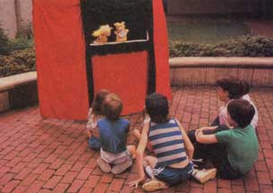
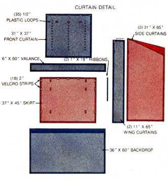
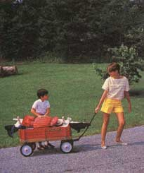
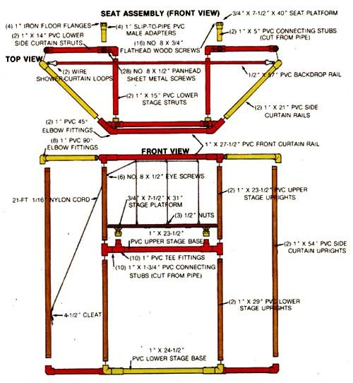
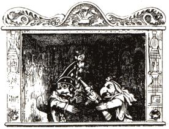

Wake up the child in you, toss a puffof wizardry into the air, and help your child discover the joys of puppetry.
Part human, part fantasy . . . puppets have delighted both young and old for generations. Children (especially wee ones) feel a very spe cial kinship with these hand-held cloth-andtinsel beings. If you don't believe me, the next time you have the opportunity, stop and watch how tenderly an awestruck toddler who's been invited to touch a fuzzy animal puppet (still on the puppeteer's hand) will stroke and caress that pretend character. It's as if the puppet were much more real . . . well, than you or me.
Why this affection and ready trust? One reason may lie in the fact that children often dwell in a world suspended between reality and fantasy. And puppets can help create a needed bridge between the two by communicating with youngsters in a unique language of sights and sounds that, although foreign to most adults, is crystal clear to kids.
What's more, psychologists and teachers tell us that oftentimes a shy or troubled young person can disclose to (or through) a puppet a carefully guarded secret, which otherwise might never have been expressed. But, whatever the reason(s), children and puppets really do share an almost magical bond.
STAGESTRUCK
Realizing the inherent possibilities for magic in puppetry, MOTHER's "elves" have been hard at work devising the plans for "The World's Most Extraordinary Puppet Theater" (which is pictured and described on these pages). They have even had it tested by experts (children!) and have discovered that this amazing space possesses the power to sweep its inhabitants off to the enchanting realm of their imaginations!
However, such a journey is not possible without a modicum of adult enthusiasm to set things in motion. And building the stage, as you may have guessed, is only the beginning of your parenting part in this family adventure. Of course, you could simply present your PVC-velour creation to your youngsters and hope that they'll figure out something to do with it. And maybe they will. But chances are that-without guidance-they won't. And the theater that could've been "the world's most extraordinary" will become, well, mere ly ordinary and thus easily dismissed.
Are you game to lend another hand? Well, all you'll have to do is learn enough about puppetry to be able to nurture a genuine interest and respect for the art (and its tools) in your offspring. The rest will be up to the kids. OK?
And don't worry, you're going to be a ter rific puppetry coach! Puppets and script ideas are easy to come by, and understanding what to do with them is a lot simpler than you might think. Besides, once you start exploring the hidden mysteries of the lilliputian stage, you just might stumble across some long-lost insights from your own childhood.
Unfortunately, I haven't the space for much detail here, but I didn't want to leave you in the dark, either, with only a small stage to shed light on the vast subject of puppetry. So, I've compiled a resource list for you. Each book, organization, and outlet for plays, puppets, and patterns has been highly recommended by experienced puppeteers from all across the country. If you'll turn back to the Access column on page 30, you'll find all this information (and more) in the section on puppetry.
CHILDREN (LIKE PUPPETS) NEED A HAND
Of course, all the knowledge in the world is useless without your first providing a gent le push (at just the right time) to inspire your child to give life to puppets: "Sure, this theater here and those limp puppets over there won't do a dern thing all by themselves. But with your assistance . . . Shazam! . . . they'll whisk you off to never-never land! You don't believe me? All right, I'll prove it. Here, sit backstage. Now put Goldilocks on your right hand and old Papa Bear on your left. No, give Mama Bear and Baby to your little brother. OK, OK, I'll work the curtain, but just this once! You remember the story, right? Ready?
Here we go!" With this kind of boost, your would-be puppeteers should be off and running.
Why, before you know it, your "thimble players" will be managing things on their own, performing puppet shows everywhere: in the basement, the backyard, and all through the neighborhood. Who knows where such experiences may lead? And just think, you were the one who lent them that first (oh, and second!) helping hand. Magic? Enchantment? You'd better believe it!
EDITOR'S NOTE:
For further reading on puppetry and staging, you
can look forward to the publication of Cloth
Marionettes: Sewing, Stringing, Staging by Lucy
and Grace Morton, which should be available by
the time you read this. A new do-it-yourself
crafts book, it includes line drawings, pattersn
and instructions for ten easy-to-make
marionettes.
|
 |
 |
 |
|
 |
 |
|